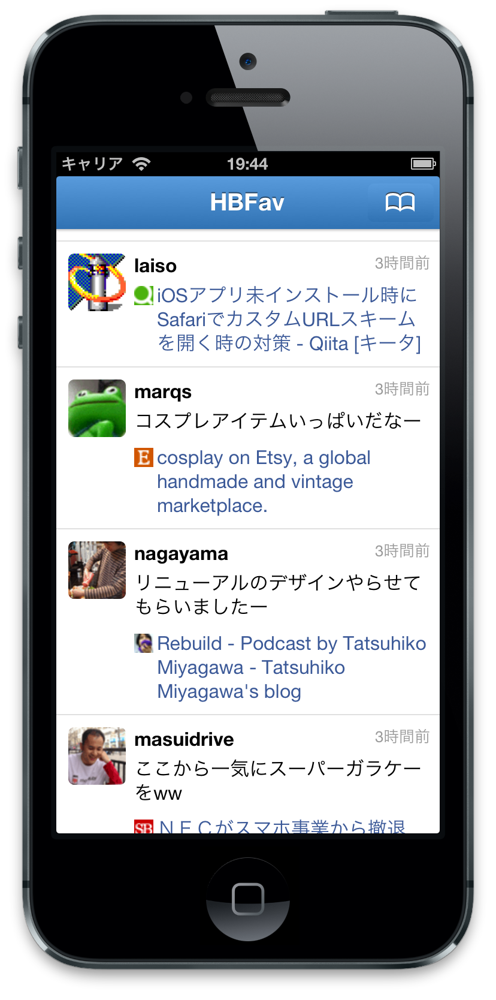

HBFav2
Hatena-Bookmark Reader for iOS
About HBFav
HBFav2 は、はてなブックマークをタイムライン形式で読むための iOS アプリです。
はてなブックマーク上で気に入ったユーザーを「お気に入り」に追加しおいて、HBFav を使ってみてください。お気に入りユーザーが集めた新着ブックマークがTwitterストリームのように流れてくるでしょう。
新しいバージョン 2.0 は安定性を向上する目的で一から開発し直しました。人気エントリーや新着エントリーの閲覧、Pocket への保存、Readability モードで精読など各種新機能も追加しました。